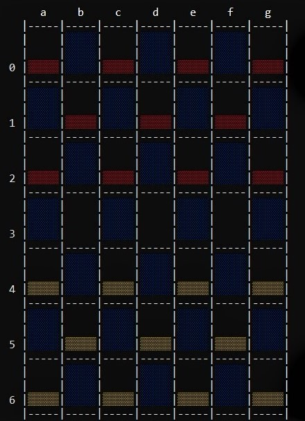
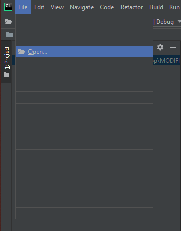
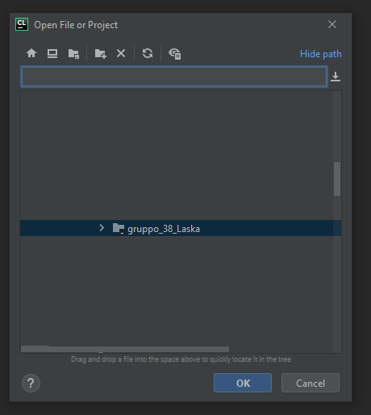
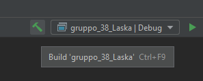

Developers & Mainteners
Gruppo 38 IaP:
Leonardo Sartori 886069@stud.unive.it
Mattia Dei Rossi 885768@stud.unive.it
Agostino Calabrò 974519@stud.unive.it
Descrizione del progetto miniLaska
miniLaska è una variante del gioco originale Laska.
Rispetto al gioco originale miniLaska prevede le seguenti limitazioni:
- si può mangiare/conquistare una sola volta per mossa.
- le torri possono essere alte al massimo 3 pedine, superato questo limite, la pedina più in basso viene rimossa dalla scacchiera.

Tutti i dettagli del gioco sono disponibli qui: http://www.lasca.org/.
Questo progetto è stato interamente concepito per essere compilato ed eseguito in ambiente Windows utilizzando un compilatore Cmake.
Il campo di gioco può essere variato rispetto all'originale (7x7) modificando il valore di: "#define N_ELEMENT (7)".
N.B: Inserire solo valori dispari.
Può essere compilato anche tramite gcc ed eseguito in un Sistema Operativo Unix o MacOS, ma la visualizzazione sarà compromessa.
In tal caso sarà necessario modificare opportunamente i codici relativi ai simboli UNI-CODE. Per far ciò seguire le modifiche
Idea di progetto
Relazione del progetto relazione.pdf
Abilitazione colori Windows
Per visualizzare correttamente la stampa a terminale è necessario abilitare un registro apposito. Seguire la guida colori.md
Compilazione
Per compilare è suggerita una versione di un compilatore avente Cmake 3.17+ Ad esempio utilizzare l'IDE Clion con Toolchain Visual Studio cosi impostato.   
Aprire CLion e cliccare su open.
Aprire la cartella del progetto chiamata gruppo_38_Laska.
Successivamente compilare il codice eseguendo un "rebuild" del progetto.
Esecuzione
Aprire il file generato con un doppio click del mouse o da un terminale gruppo_38_Laska.exe,
il percorso nel quale si trova l'eseguibile è /gruppo_38_Laska/cmake-build-debug/gruppo_38_Laska.exe
Tutorial gioco
Prima di giocare a miniLaska seguire la guida presente guida.md